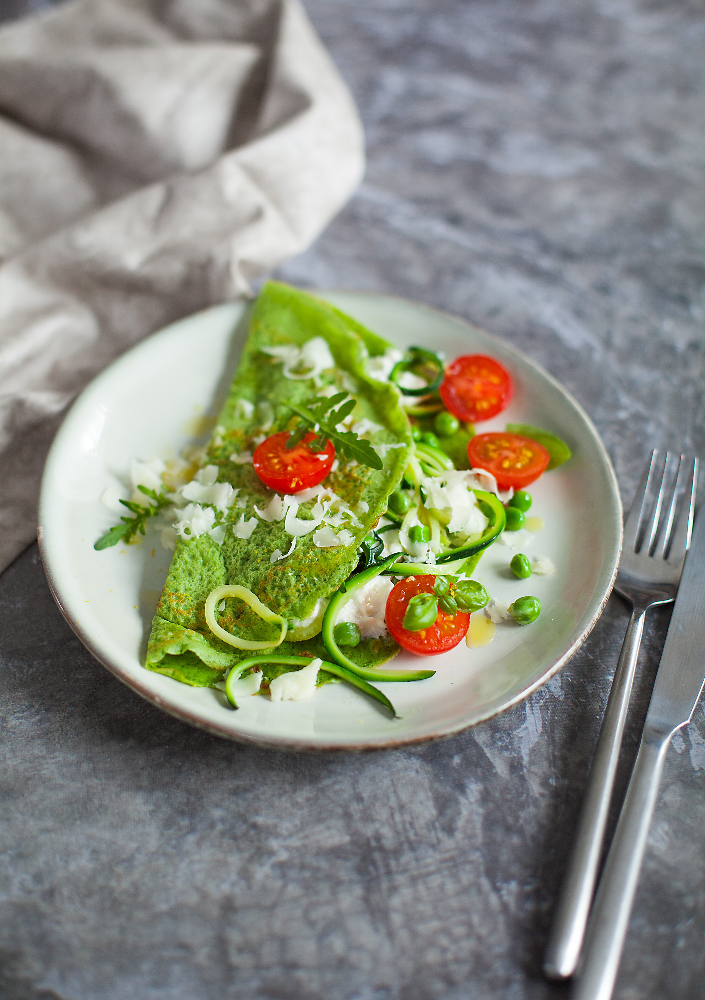

Очень нежные, эффектные как по цвету, так и по вкусу и текстуре блинчики. Для приготовления зелёных блинчиков понадобится блендер: либо погружной, либо стационарный. Если блендера нет, можно зелень очень мелко порубить ножом и перетереть в ступке с солью, затем добавить эту массу к остальным ингредиентам и взбить венчиком. Но текстура блинчиков будет не такой однородной.
Для выпекания блинчиков лучше использовать блинную сковородку.
Начинку в блинчик можно заворачивать по-разному: можно свернуть пополам кармашком, в виде треугольника или скатать в трубочку.